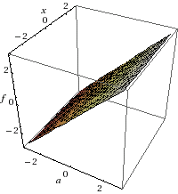
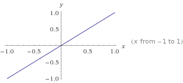

| Name | Equation | Graph |
|---|---|---|
| Constant | f(x)=a , y=a |  |
| Identity | f(x)=x , y=x |  |
| Reciprocal | f(x)=1/x . y=1/x | |
| Quadratic | f(x)=xn , y=xn , n is even | |
| Power (Even or Odd) | f(x)=xn , y=xn | n is even or odd |
| Cubic | f(x)=x3 , y=x3 , n is odd | |
| Greatest Integer | f(x)=[x] , y=[x] | |
| Square Root | f(x)=√x , y=√x |